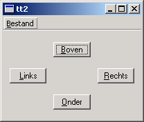

Arrow Pad Example
Understanding the Qt Linguist contexts concept and using two or more languages.
We will use two translations, French and Dutch, although there is no effective limit on the number of possible translations that can be used with an application.
When using qmake, the relevant lines in arrowpad.pro are:
HEADERS = arrowpad.h \
mainwindow.h
SOURCES = arrowpad.cpp \
main.cpp \
mainwindow.cpp
TRANSLATIONS = arrowpad_fr.ts \
arrowpad_nl.ts
When using CMake, the relevant lines in CMakeLists.txt are:
find_package(Qt6 REQUIRED COMPONENTS LinguistTools)
qt_standard_project_setup(I18N_TRANSLATED_LANGUAGES fr nl)
qt6_add_translations(arrowpad
QM_FILES_OUTPUT_VARIABLE qm_files)
install(FILES ${qm_files} DESTINATION ${INSTALL_EXAMPLEDIR})
Run lupdate. It should produce two identical message files arrowpad_fr.ts and arrowpad_nl.ts. These files will contain all the source texts marked for translation with tr() calls and their contexts.
When using qmake, lupdate must be run manually:
lupdate arrowpad.pro
When using CMake, build the update_translations target to run lupdate:
cmake --build . --target update_translations
See the Qt Linguist Manual for more information about translating Qt applications.
Line by Line Walkthrough
In arrowpad.h we define the ArrowPad subclass which is a subclass of QWidget. In the screenshot above, the central widget with the four buttons is an ArrowPad.
class ArrowPad : public QWidget { Q_OBJECT
When lupdate is run it not only extracts the source texts but it also groups them into contexts. A context is the name of the class in which the source text appears. Thus, in this example, "ArrowPad" is a context: it is the context of the texts in the ArrowPad class. The Q_OBJECT macro defines tr(x) in ArrowPad like this:
qApp->translate("ArrowPad", x)
Knowing which class each source text appears in enables Qt Linguist to group texts that are logically related together, e.g. all the text in a dialog will have the context of the dialog's class name and will be shown together. This provides useful information for the translator since the context in which text appears may influence how it should be translated. For some translations keyboard accelerators may need to be changed and having all the source texts in a particular context (class) grouped together makes it easier for the translator to perform any accelerator changes without introducing conflicts.
In arrowpad.cpp we implement the ArrowPad class.
upButton = new QPushButton(tr("&Up"));
downButton = new QPushButton(tr("&Down"));
leftButton = new QPushButton(tr("&Left"));
rightButton = new QPushButton(tr("&Right"));
We call ArrowPad::tr() for each button's label since the labels are user-visible text.
class MainWindow : public QMainWindow { Q_OBJECT
In the screenshot above, the whole window is a MainWindow. This is defined in the mainwindow.h header file. Here too, we use Q_OBJECT, so that MainWindow will become a context in Qt Linguist.
arrowPad = new ArrowPad;
In the implementation of MainWindow, mainwindow.cpp, we create an instance of our ArrowPad class.
exitAct = new QAction(tr("E&xit"), this);
exitAct->setShortcut(QKeySequence(tr("Ctrl+Q", "Quit")));
connect(exitAct, &QAction::triggered, this, &MainWindow::close);
We also call MainWindow::tr() twice, once for the action and once for the shortcut.
Note the use of tr() to support different keys in other languages. "Ctrl+Q" is a good choice for Quit in English, but a Dutch translator might want to use "Ctrl+A" (for Afsluiten) and a German translator "Strg+E" (for Beenden). When using tr() for Ctrl key accelerators, the two argument form should be used with the second argument describing the function that the accelerator performs.
Our main() function is defined in main.cpp as usual.
QTranslator translator;
if (translator.load(locale, u"arrowpad"_s, u"_"_s))
app.installTranslator(&translator);
We choose which translation to use according to the current locale. QLocale::system() can be influenced by setting the LANG environment variable, for example. Notice that the use of a naming convention that incorporates the locale for .qm message files, (and TS files), makes it easy to implement choosing the translation file according to locale.
If there is no QM message file for the locale chosen the original source text will be used and no error raised.
Translating to French and Dutch
We'll begin by translating the example application into French. Start Qt Linguist with arrowpad_fr.ts. You should get the seven source texts ("&Up", "&Left", etc.) grouped in two contexts ("ArrowPad" and "MainWindow").
Now, enter the following translations:
ArrowPad- &Up - &Haut
- &Left - &Gauche
- &Right - &Droite
- &Down - &Bas
MainWindow- E&xit - &Quitter
- Ctrl+Q - Ctrl+Q
- &File - &Fichier
The Done & Next button marks the translation as done and moves on to the next source text. It's quicker to use its short cut (see the Translation menu bar) after typing each translation.
Save the file and do the same for Dutch working with arrowpad_nl.ts:
ArrowPad- &Up - &Omhoog
- &Left - &Links
- &Right - &Rechts
- &Down - Omlaa&g
MainWindow- E&xit - &Afsluiten
- Ctrl+Q - Ctrl+A
- File - &Bestand
We have to convert the tt1_fr.ts and tt1_nl.ts translation source files into QM files. We could use Qt Linguist as we've done before; however using the command line tool lrelease ensures that all the QM files for the application are created without us having to remember to load and File|Release each one individually from Qt Linguist.
Type
lrelease arrowpad.pro
when using CMake, type
cmake --build . --target release_translations
This should create both arrowpad_fr.qm and arrowpad_nl.qm.
To use arrowpad_fr.qm, change your system language to French. In Unix, one of the two following commands should work:
export LANG=fr setenv LANG fr
In Windows or Mac, set your display language to French.
When you run the program, you should now see the French version:

Try the same with Dutch (use LANG=nl in Unix). Now the Dutch version should appear:

Exercises
Mark one of the translations in Qt Linguist as not done, i.e. by unchecking the "done" checkbox; run lupdate, then lrelease, then the example. What effect did this change have?
Set LANG=fr_CA (French Canada) and run the example program again. Explain why the result is the same as with LANG=fr.
Change one of the accelerators in the Dutch translation to eliminate the conflict between &Bestand and &Boven.